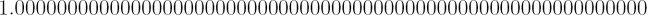

A flat Universe is one in which the amount of matter present is just sufficient to halt its expansion, but insufficient to re-collapse it. This would represent a very fine balancing act indeed! Imagine the surprise of astronomers to find that, as near as we can tell, the Universe has exactly the required density of matter to be flat. This seems like a truly remarkable coincidence and has become known as the ‘flatness problem’.
To phrase it more scientifically, the flatness problem arises because we appear to live in a Universe that has an observed a density parameter (Ω0) very close to 1. In other words, the Universe is very close to the critical density. The ‘problem’ is that for the Universe to be so close to critical density after ~ 14 billion years of expansion and evolution, it must have been even closer at earlier times. For instance, it requires the density at the Planck time (within 10-43 seconds of the Big Bang) to be within 1 part in 1057 of the critical density. i.e. Ω0 initially must have been almost exactly:

There is no known reason for the density of the Universe to be so close to the critical density, and this appears to be an unacceptably strange coincidence in the view of most astronomers. Hence the flatness ‘problem’.
Many attempts have been made to explain the flatness problem, and modern theories now include the idea of inflation which predicts the observed flatness of the Universe. However, not all scientists have accepted inflation, and the matter remains a subject of much debate and research.